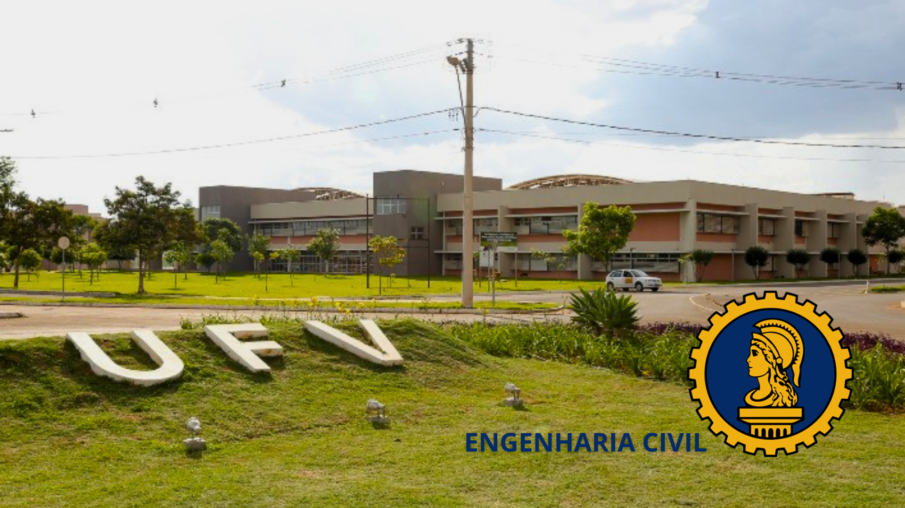
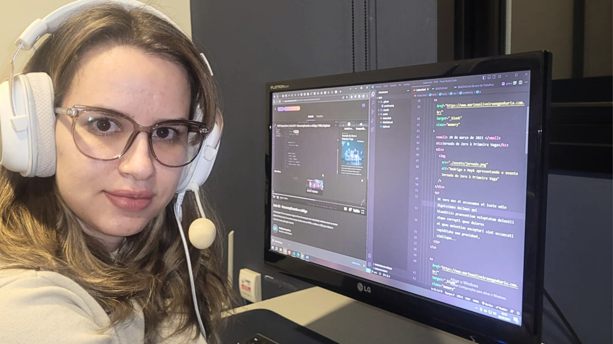

2011
Primeiro contato com programação: Graduação de Engenharia Civil

No primeiro período da graduação em Engenharia Civil, no qual sou formada pela Universidade Federal de Viçosa, cursado no campus de Rio Paranaíba, tive a disciplina de Programação, onde aprendi os conceitos básicos e a lógica de programação, além de uma introdução à linguagem C.
Durante a disciplina desenvolvemos projetos simples, sem elementos gráficos desenvolvidos em linguagem C. Gostei bastante do conteúdo aprendido e tive uma excelente avaliação final.
2023
Minha experiência profissional
Formei em Engenharia Civil em 2015, ano em que me mudei para Uberlândia para trabalhar em um escritório de Engenharia e Arquitetura na elaboração de projetos estruturais e hidráulicos. Onde trabalhei até 2017.
Em 2017 me mudei para Patrocínio, e fui chamada no concurso da Prefeitura de Patos de Minas, onde trabalhei até final de 2020.
Durante esse período, em 2019, comecei meu trabalho como professora do curso de Engenharia Civil no Centro Universitário do Cerrado Patrocínio (UNICERP), onde trabalho atualmente como professora e coordenadora do curso.
Em 2021 comecei também meu trabalho como autônoma, na elaboração de projetos arquitetônicos, de interiores, estrutural, hidráulico e elétrico. O meu site pode ser acessado clicando na imagem acima.
12 de maio de 2023 tomei posse, por meio de concurso, na Prefeitura de Patrocínio em um cargo de Engenheira Civil de 20 horas semanais.
E neste momento estou reavaliando minha vida profissional atual e futura.
21 de maio de 2023
NLW Spacetime

Por indicação do meu marido, Gilberto Oliveira, que é mestre em ciência da computação, graduado em sistemas de informação e professor universitário da área, minha principal referência sobre programação. Estou aqui fazendo meu primeiro site seguindo os ensinamentos da NLW SPACETIME da ROCKETSEAT. E utilizando pela primeira vez a interação do desenvolvimento com interface gráfica.
Estou aqui, estudando por hobby, nas horas vagas que atualmente estão bem escassas, mas me divertindo muito com todo aprendizado que estou adquirindo.
Sou nerd mesmo, não dá para negar. 🤓🤷♀️
Esse é o primeiro de uma série de cursos da área que pretendo fazer. E sendo assim, quem sabe o hobby vire profissão.